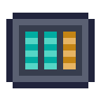
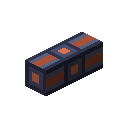

Serving Models
A model too big for an agent's head can still work for it. A Model Server holds the model and answers questions for everything tuned to it, as far as its relays reach. A network of relays does more than carry questions: it keeps a base running with nobody there, moves you between its gates, makes storage and power at both ends of the world one, and lets you read and steer the base from wherever it reaches.
A Terminal's screen, a Relay Gate's.
The Model Server
 Crafting (Shapeless)
Crafting (Shapeless)


Use a saved Checkpoint on a Model Server to load its model; sneak-use the server with an empty hand to take the checkpoint back. Use it with an empty hand to open its screen: the model it serves, how many answers a second it can give and how much of that is in use, what its memory holds, and who has been drawing on it. Each line says more under the pointer. A Model Server's screen, part by part.
What a server can spend
A server has so many operations a second to spend: 142 million by itself, as many again for each Training Accelerator touching it, half as many for one running hot. A token through a model costs two operations for each of its weights, so a bigger model answers less. Its screen counts in answers that read 16 tokens and write 8:
| Transformer of two blocks | Weights | Answers a second, by itself |
|---|---|---|
| 32 wide | 33,049 | 14 |
| 64 wide | 115,161 | 4 |
| 96 wide | 246,425 | 1.9 |
Everything tuned to it draws on those operations: agents, Terminals, Forecasters, Readers, Smelters, Surveyors, Ports and Watch Posts. A question costs what its model really worked out for it, and its answer comes when the server has that much to spend, so a long answer waits longer than a short one and holds up what comes after it. While you hold a tuned Terminal or Relay Card, a corner of your screen shows how the server is doing.
When more than 64 questions wait, new ones are turned away, the front lights run red, and anyone near is told. Whatever asked goes on without a model until there is room: an agent stops and says so, a Forecaster stops running blocks ahead, a Smelter's melt goes uncontrolled and makes two ingots, a Port goes back to its rule. The server's screen says who has been drawing the most. More Accelerators are one way out. A smaller model doing the same job is another: see Distilling. The rest of this page is the third: making each question cost less.
The KV Cache
Left to itself, a model writing a token reads everything before it again. An answer that reads 16 tokens and writes 8 takes 156 rows. Yet a new token changes nothing about the rows before it: all an attention needs from them is each one's key and value. Keep those, and every token is read once. The same answer takes 23 rows and comes out the same to the last digit.
The Fabricator makes a KV Cache from a photomask of Cached Attention, a spec that opens once the transformer block is verified. Put it in the panel beside the server's window. A 64-wide server goes from 4 answers a second to 26, and the longer the answer the bigger the gain: 40 tokens come thirty times as fast. A question asked again costs nothing at all, and one that starts as another did starts from where they part.
What it keeps takes memory. A token takes two rows of the model's width in floats in each attention, 1,024 bytes in a two-block model 64 wide, and a little more for what is read back. A server holds 1 MiB with its weights in it, and each KV Cache adds 256 KiB, up to a stack of 64. When memory runs short the sequences used longest ago are forgotten, and only cost rows to work out again.
A window of 64 tokens is as far as a model reads. Past that, the window moves on 16 tokens at a time, with or without a cache, and everything in it is read again: positions are learned, so what was kept belongs to places that have moved.
Batches
The button under the panel sets how many sequences may go through one pass. Whatever waits at once goes together, and a sequence that finishes makes room for the next at the very next pass. A pass costs something by itself, whatever it carries, and a batch shares that. On plain floats that is next to nothing, so batches earn little. On packed weights it is a lot.
Packing
The Fabricator makes a Weight Packer from a photomask of Rounding Weights, which opens at the same point. In the panel, it lets the other button keep the weights in 8 or 4 bits, packed as an exosuit's board packs them: 64 wide, 460,644 bytes become 122,359 or 64,779. That is room: a model 96 wide takes all but 62,876 bytes of a bare server at floats, and leaves about 786,000 at 8 bits, enough to keep six times the tokens.
It has two costs, and the server measures both. The weights are read out of the packed bytes on each pass, which costs as much as working out about one row at 8 bits and about two at 4. And rounding them can change what the model says, so everything it passes is tested again in that form: the server's screen shows each score, and whatever asks it goes by those scores. A form that fails a test closes what that test opens.
| A 64-wide model, on one thread's operations | Answers a second |
|---|---|
| Floats | 4 |
| Floats, KV Cache | 26 |
| 8 bits, KV Cache | 20 |
| 8 bits, KV Cache, batches of 32 | 26 |
| 4 bits, KV Cache | 15 |
| 4 bits, KV Cache, batches of 32 | 24 |
Drafts
The last slot of the panel takes a second checkpoint, a small model that reads the same way. It proposes the next four tokens, and the served model reads all four in one pass. A proposal stands with probability p ÷ q, p being how likely the served model makes it and q the draft, or for certain if p is the larger; the first that doesn't stand is drawn again from what the served model wants beyond what the draft gave it, and the rest are dropped. What comes out follows the served model's own probabilities exactly, whatever the draft is like. A good draft only means fewer passes.
So a draft pays only when passes are dear and most of its proposals stand. Its own rows cost something, and on floats a pass is so cheap that a draft only adds work. A 32-wide draft distilled for 800 steps from a 64-wide model had 26% of its proposals stand, and took that model down from 12 answers a second to 9 on floats, and from 12 to 8 at 4 bits. The server's screen counts how many stood.
Relays
 Crafting (Shapeless)
Crafting (Shapeless)


A Model Server reaches 16 blocks by itself, and a Relay 32. Two of them join when their reaches touch: a relay up to 48 blocks from the server is on its network, and one up to 64 blocks from that relay is too, so the ground a network reaches has no gaps in it. Reach runs level, however high or deep you stand.
Relays stacked make a mast, which reaches 32 blocks for each block of it, up to 1,024 from a mast 32 blocks tall. Use one to see how far it reaches and what is on its network.
The lamp on top lights while a model is served on the network, and such a network keeps the ground around it running. The chunk each of its relays, gates and links stands in, and the eight around that, stay loaded with nobody near them: machines go on working, agents go on walking, and the server goes on answering. Put a relay in each part of a base you want kept running.
Relay Cards
Crafting (Shapeless)

Use a Relay Card on a Model Server to tune it. In an agent's or a Reader's model slot, the card asks the server instead of carrying a model: any size of model, wherever the server's network reaches. Every agent tuned to one server shares its answers per second.
In an Access Point, a card that reaches the server lets the storage network's Wireless Terminals go anywhere the server's relays cover (Storage).
Relay Gates
A Relay Gate is a pad to stand on, and it has to stand in a relay's reach. The Fabricator makes it from a Transformer mask, 8 casings, 16 wafers and 8 weight crystals. It opens once its network can carry you: a model that passes Orders is served on it, and it gives at least 16 answers a second, which is a server with three cooled Accelerators. An open gate shows a shaft of light.
Use a gate to see its network on a map, and click another gate, on the map or in the list beside it. A jump is a request like any other. It takes one answer for every step of the way from relay to relay, and each waits its turn at the server behind whatever else is asking, so a gate is quicker with more Accelerators and slower when the base is busy. Walk away and the jump is called off.
Name a gate in the box at the top of its screen, or at an anvil before you place it.
A network doesn't have to be one piece. Use a Relay Card on a gate and it takes the gate's place; use it on another gate, however far off, in any dimension, and the two are tuned to each other. Their networks are one from then on: for jumps, for reach and for links. Sneak-use a card on a gate to cut it free.
Relay Links
A Relay Link comes from the same mask, with 4 casings, 8 wafers and 4 weight crystals. It joins whatever touches it, on any face: Storage Links, Drive Racks, Power Cables and machines. On an open network, all the storage networks and all the power networks at its links act as one. A Storage Terminal at the far end shows what the drives at the near end keep, a Port there takes from them, and a machine there runs on the generators back home. Assemblers and Processors work for a request made anywhere on it in their own dimension.
A network's links together carry 4 items and 50,000 FE a tick for each answer it gives a second: at 16 answers, 1,280 items a second and 800,000 FE a tick, and each cooled Accelerator on the server adds 320 items a second and 200,000 FE a tick. Fluids count against the items, a bucket as 8. Use a link to see how much of that it is carrying. Its faces light while it carries.
The Terminal
Crafting (Shapeless)

Tune a Terminal on a Model Server the same way, then carry it out into the world and use it anywhere the server's network reaches. Every call it makes takes its turn at the server, as any other question does.
- Map shows the network from above, on the ground as far as you can see it: its reach, its masts, its gates and its agents. Click a gate to go there, from wherever you are: that takes 8 answers more than a jump from a gate.
- Base shows what its storage networks hold and what its machines are doing. Click a storage network to open it as if you stood at its Storage Terminal: search, take, put in and ask it to make things.
- Agents shows what each agent in reach is doing. Pick one to stop it, start it again, hand it the program on any Program Card you carry, or give it an order. A program written out runs as it stands. Anything else the served model writes as a program, so an agent needs no model of its own for this, and a model that passes Orders writes it best. A plain step or one job it does at once; anything that says where or how, anything longer, or anything the model is under 60% sure of, waits for your yes here: point at it to see its steps on lines.
- Writing is the served model itself: write the start of something and it carries it on.
While you hold a tuned Terminal, bars in the corner show how far inside the reach you stand, pulses run from mast to mast while the server answers, and near the edge of the reach, posts of light mark where it ends. Every agent the server reaches also hears the orders you give by name in chat.
Heat
Accelerators run hot, and past the first four they take power (Compute). One touching water, ice or snow, or standing in a cold biome, lends a full thread to a Core or a full share of answers to a server; one with nothing to cool it lends half, and smokes while it works.
Tensor CasingWeight CrystalGold IngotBlock of RedstoneSchematic: RelaysModel Server


A mast four relays tall: it reaches 128 blocks.
A Model Server, serving.
A Relay Gate, open.
A Relay Link.
Lightning RodLanternCopper IngotRedstone DustRelayPaperRelay Card



 Glass PaneTerminal
Glass PaneTerminal